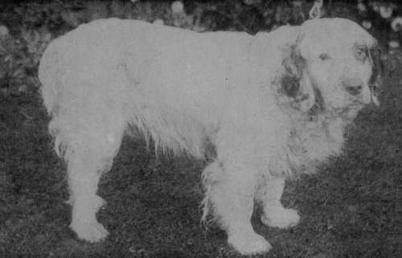

The Clumber
Description
This section is from the book "Sporting Dogs. Their Points And Management In Health, And Disease", by Frank Townend Barton. Also available from Amazon: Sporting Dogs; Their Points and Management in Health and Disease.
The Clumber
Very early on, these Spaniels were bred at Clumber House, the seat of the Duke of Newcastle, one William Mansell having had the care of them under the Duke for a great number of years, and much was done to improve the beauty and utility of this handsome variety of Spaniel.
It is, in the author's opinion, the one variety of Spaniel that has suffered the least in the way of introducing the blood of other species. To attempt to cross the Clumber, with the object of making some improvement, is defeating the first principles of the Clumber exhibitor, purity of breed being the aim of his affection.
On the other hand, the introduction of Clumber blood into other strains of Spaniels, for working purposes at least, is rather beneficial than otherwise, and it is a cross frequently employed.
At one time the Duke of Portland had a very fine kennel of Clumbers, and when these dogs appeared at the Palace or other Kennel Club Shows, they simply swept the boards.
Mr Holmes of Lancaster had also a strong team, though I did not like the appearance of his Clumbers anything akin to those shown by the Duke.
Probably the handsomest—we will not say the most typical—Clumber that ever adorned the show bench was Mr Parkinson's Champion " Trusty," though, for some unknown reason, this exhibitor quietly dropped from the show ring, and " Trusty " sank into insignificance.
My dog, Champion " Psycho," was one of the most typical Clumbers going the rounds, and deserved a much more successful career than he had. He was about as sweet-tempered a dog as it was possible to have, and formed a most devoted attachment to my mother, under whose care he chiefly was.
At one time the classes for Clumber Spaniels were well filled, though in recent years they have declined considerably.
Lately His Most Gracious Majesty the King, and the Duchess of Newcastle, have shown Clumbers, and this alone should give a fresh impetus towards the popularity of the breed. At anyrate, we hope it will have this effect.
When carefully broken, Clumbers make excellent workers, and can stand a lot of heavy work.
Clumber Spaniel Dog (Bobs of Salop).
A typical Clumber must be long, low and heavy. The author does not like a Clumber to be so short on the leg that the belly nearly sweeps the ground, and considers extreme lowness ought not to be encouraged. The Americans bred their Clumbers for use more than show bench, consequently kept up a good useful sort. Of course, any tendency to legginess is fatal to type.
Weight
About 55 lbs.; bitches a trifle less, and big in bone.
The Head
The Head of a Clumber is very characteristic. It must be " massive " in every sense of the word, or wide in all proportions, and the nose broad, full and flesh-coloured—a Dudley nose.
Ears
Long, carried close to head and " set on " low with feathering on front edge, not elsewhere.
Eyes
Deeply Set In Orbits, And Rather Large.
Coat
Soft, silky, shining, straight, dense, and feather long and profuse.
For colour markings, we prefer orange ears, with an evenly marked head and ticked legs. Orange is a common marking. Less marking on the body the better.
Powerful loins; a long and straight back, and a nicely rounded croup are essentials of beauty. A deep chest, well-rounded ribs, and powerfully-built fore-quarters are equally important.
* A moderate degree of development of the Membrana Nictitans (so called Haw) is not only typical of the Clumber, but advantageous. To remove this useful Membrane (unless for surgical reasons) is a cruel and useless procedure, deserving severe condemnation.
A good Clumber must have staying power, and if he has not a well-developed muscular system, he cannot have this requisite.
Neck
To be of medium length and stoutly built.
The head, body and hind-quarters constitute fifty per cent, of the total value of points, and the neck and shoulders fifteen per cent., hence the significance of being well done up in these regions.
Stout arms and forearms, with an abundance of feather, are necessary.
A good deal of brushing and combing, together with washing before showing, are needful to make the Clumber look fit. His heavy appearance can be increased by keeping him a bit above average condition.
One should be able to purchase a good pup—one likely to make a winner—for, say, ten guineas.
Club
Clumber Spaniel.
Continue to: